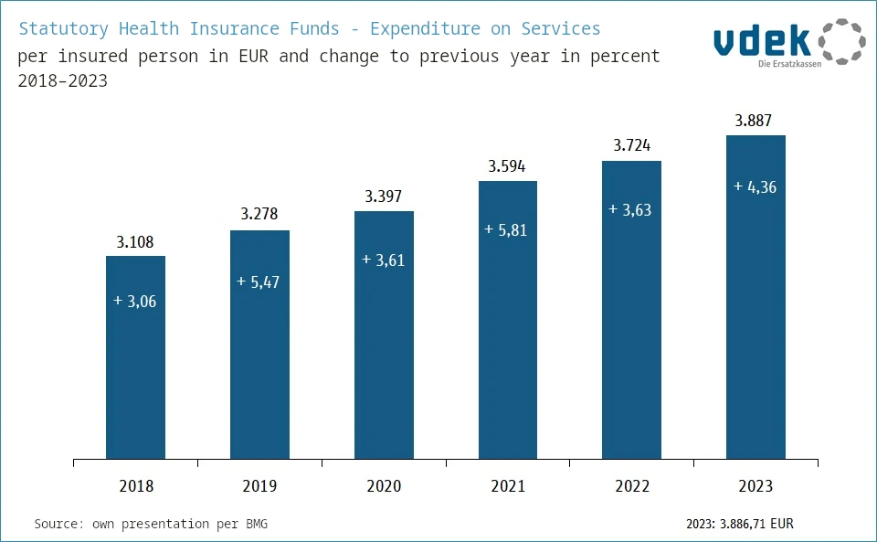
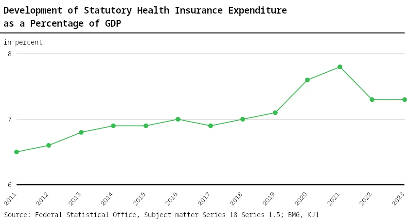

6. Healthcare
6.1 Current Situation in Germany
The healthcare system is difficult in several respects. For one, it is a very complex structure. Here, we won't find a simple solution like “we'll abolish it” or “everyone gets the same amount of money”. Furthermore, there's a lot of money at stake, and no solution will offer everything to everyone. Which immediately brings us to the problem of ethics: When do you deny services? How much is a human life worth?
Nevertheless, healthcare is an area we should be talking about. Because it is precisely due to the ethical issues that it is enormously important. When people die and suffer because the system is poorly constructed, because money and time are used inefficiently—aren't all those responsible then complicit in this suffering? Because they didn't try to build a better system?
Healthcare is structured very differently in different countries. I want to take a look at the current setup in Germany, before proposing redesigns.
This chapter only looks at healthcare in the context of healing. Long-term care (in Germany financed separately through long-term care insurance) is a whole separate topic, which I am not going to address here. This chapter is extensive enough as it is.
I see two obvious key problems in Germany's healthcare system:
1. Doctors and nurses are constantly overworked and have too little time for their patients. This leads to a variety of problems: Patients don't feel well-treated or understood. Doctors and nurses are at risk of burnout*. The whole system is constantly running at its limit without any reserve.
2. There is no reasonable system of preventative care. Theoretically, there is a list of checkups health insurance companies pay for[28]. But let's be honest: who, besides those who work in healthcare themselves, really has an overview about all that and is even aware of it? Most of us only go to the doctor once something hurts.
The list of covered preventive checkups is: cervical cancer, breast examination, prostate & lymph nodes, full-body skin examination, colon & rectum, hidden blood, skin cancer screening, health checkup, dental preventive care, vaccinations.
Translated quote from the website[28]: “The number of people who take advantage of such examinations is low: only just under 50 percent of all women (aged 20 and over) regularly attend cancer screening, and for eligible men (aged 45 and over) it is not even 20 percent. Only 17 percent of all women and men actually take advantage of the opportunity for a health checkup every three years from the age of 35.”
These two problems are, of course, intertwined: if doctors are already very stressed, they will hardly urge their patients to make an appointment for a checkup. And if checkups don't happen, then problems will be put off. Which, in addition to the reduced quality of life, also means a lot more work for the doctors later on.
Let's take a look at the preventive checkups of vehicles in Germany (HU/TÜV) for comparison.
From https://www.allianz.de/auto/kfz-versicherung/hauptuntersuchung:
• An expert inspector checks whether the components of the car that ensure safety in road traffic are functioning properly—for example, brakes, lighting system, engine compartment and tires.
• A car must undergo its first mandatory vehicle inspection (HU) three years after initial registration, and then every two years thereafter.
• The cost for the check ranges from 70 to 100 euros. Failing to get your vehicle inspected (TÜV) jeopardizes your insurance coverage and risks a fine of up to 60 euros and a point on your driving record in Flensburg.
• You can find the inspection due date on the TÜV sticker. The round inspection sticker is located on the license plate on the rear of your car.
If we compare this to preventative health checkups for people, we see that all the necessary checks for a car are bundled together, whereas people have to go separately for each checkup. The legislator mandates vehicle inspections (under penalty of fine) and prominently indicates this (sticker on the license plate). In contrast, people don't even get a notification, and appointments are only available months later (if you can even find a doctor who will accept you as a patient).
Now it is often said that Germany is a nation of drivers, but this is absurd!
What are the consequences of this neglect of preventive care?
Let's take the example of someone who smokes, is often stressed, eats poorly, and has therefore become overweight. For all these reasons, he develops high blood pressure. He hasn't been vaccinated in many years either, because he has far too many other important things to do than to think about doctor's appointments and his health.
Due to the strain on his body, one day he suffers a silent heart attack. In other words, his heart attack was not recognized as such. But because of it, his heart function decreases, he develops diabetes, and his cognitive abilities decline. At least he didn't die from it! Due to the damaged heart, water accumulates in his tissues (edemas). And the poor circulation, combined with his smoking, continues to damage his lung tissue.
All of this damage is irreversible; even with the best medical care, his body will never be healthy again.
At least a hospital is happy, to get somebody for whom it can bill a lot of DRG payments for, in order to perform all sorts of operations. Because unlike with preventive care, there are plenty of free capacities available, which are now supposed to make money.
All of this could have been prevented if our example patient's high blood pressure had been detected and treated early on. And if a doctor had gotten him to change his diet, exercise more, avoid stress, and quit smoking.
So that was an example patient. Next, let's talk about money, once again using Germany as the example.
In 2023, Germany’s statutory health insurance funds spent 289 billion euros.[29] That's just under €3,900 per year and insured person.34 For this, insured persons pay 14.6% of their income into statutory health insurance.
With that, Germany already affords itself one of the most expensive healthcare systems in the world (second place worldwide as a percentage of GDP). On top of that: These expenses are rising sharply! In 2018, the statutory health insurance funds spend €3,100 per insured person. That's a 25% increase in 5 years!

Admittedly, these figures are not adjusted for inflation. Nevertheless, spending is not only increasing faster than inflation, but also faster than our gross domestic product. So we are increasing our spending on the healthcare system more than our economy grows.

Even apart from all currently existing problems: We will no longer be able to afford this healthcare system in just a few years due to the aging population. Either we significantly reduce the paid services, or we change the system.
In Germany (as of 2018), there are 43 doctors per 10,000 inhabitants (0.43% of the population), roughly equally distributed between hospitals and physicians in private practice.[32] In addition, there are 132 nurses per 10,000 inhabitants (1.32% of the population).
The exact figures are not important here, as they change from year to year. We need nothing more than an order of magnitude to keep in mind while we redesign the entire system.
I would also like to mention that I am not a doctor myself and ultimately only have layman's knowledge of this field. If I'm mistaken on some details here, hopefully that won't detract from the overall design of a healthcare system. Details can often be adjusted without having to discard a concept.